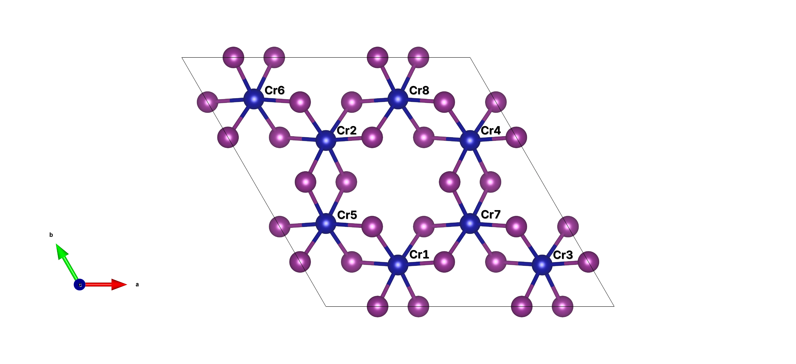

Manual
For the theoretical exploration of the magnetic properties of magnets, the bilinear Heisenberg model proves to be a useful framework for representing magnetic interactions, which can be described by
\[\mathcal{H} = \sum_{i < j} S_i \cdot \mathcal{J}_{i j} \cdot S_j + \sum_{i} S_i \cdot \mathcal{A} \cdot S_i - m \sum_{i} S_i \cdot \vec{B}\]
where the symbol $\mathcal{J}_{ij}$ denotes the exchange interaction matrix between two spins, $S_i$ and $S_j$, the matrix $\mathcal{A}$ represents the single-ion anisotropy. To determine the magnetic interaction matrix elements, researchers often employ the four-state method [1] [2] [3]. This method involves calculating the energies of four distinct magnetic configurations, allowing the extraction of individual components for the exchange matrix.
Extending this method to each element of the exchange matrix requires calculating a total of 36 energies to obtain the complete matrix. It should be noted that some energies are degenerate due to the symmetry of the material. Nonetheless, performing a manual symmetric analysis to streamline the number of energy calculations remains a challenging endeavor, as there exists a potential risk of omitting or misinterpreting certain symmetric operations.
Pre-process
One can use our program to streamline the simpilifing and calculating process easily. For example, with a POSCAR file of monolayer $\ce{CrI3}$
Cr2 I6
1.00000000000000
7.1131374882967124 0.0000000000000000 0.0000000000000000
-3.5565687441483571 6.1601577654763897 0.0000000000000000
0.0000000000000000 0.0000000000000000 18.0635365764484419
Cr I
2 6
Direct
0.6666666666666643 0.3333333333333357 0.5000000247180765
0.3333333333333357 0.6666666666666643 0.5000000501683317
0.6415738047516142 0.9999977877949036 0.4116659127023310
0.3584239830432894 0.3584261952483858 0.4116659127023310
0.0000022122051035 0.6415760169567106 0.4116659127023310
0.3584241488090230 0.9999980859273947 0.5883340783387269
0.6415739371183646 0.6415758511909699 0.5883340783387269
0.0000019140726053 0.3584260628816354 0.5883340783387269and the proper setted INCAR, POTCAR and KPOINTS for making SCF calculation, one can simply using Sym4state.jl to generate all the input files for calculating the nearest exchange interaction and the single-ion anisotropy interaction as follows:
using Sym4state
Sym4state.pre_process(
"./POSCAR",
[24], # Take Cr element as magnetic
5.0 # There exists an interaction between atoms within a distance of 5 Å.
)[ Info: There are 2 atoms taken as magnetic in the given primitive cell.
[ Info: The space group number of given structure is 162 with given `symprec`
sys:1: DeprecationWarning: dict interface is deprecated. Use attribute interface instead
[ Info: [2, 2, 1] supercell is large enough.
[ Info: The supercell has been dumped into "POSCAR".
[ Info:
[ Info: There are 2 different type(s) of pairs.
[ Info: For the 1th group, equivalent pairs are shown as follows:
[ Info: [1, 5] <=> [1, 7]
[ Info: [1, 5] <=> [1, 6]
[ Info: [1, 5] <=> [1, 5]
[ Info: [1, 5] <=> [6, 2]
[ Info: [1, 5] <=> [6, 1]
[ Info: [1, 5] <=> [6, 4]
[ Info: For the 2th group, equivalent pairs are shown as follows:
[ Info: [1, 1] <=> [1, 1]
[ Info: [1, 1] <=> [6, 6]
[ Info:
[ Info: For the 1th group:
[ Info: Find pair [1, 7] with higher symmetry!
[ Info: The number of energies now is 21.
[ Info: Find pair [1, 5] with higher symmetry!
[ Info: The number of energies now is 9.
[ Info:
[ Info: For the 2th group:
[ Info: Find pair [1, 1] with higher symmetry!
[ Info: The number of energies now is 2.
[ Info: Saving the reduced map and relations into "cal.jld2"...
[ Info: RWIGS of Cr is set to 1.39.
[ Info: RWIGS of I is set to 1.39.
[ Info: Storing path to different configuration into `cal_dir_list`. One may use SLURM's job array to calculate.This function will utilize the supercell_check method to create a supercell for the provided structure. The supercell should be sufficiently large to ensure that no more than one connection exists within a specified cutoff radius between any two atoms. For the given case of a monolayer of $\ce{CrI3}$ with a cutoff radius of 5 Å, a $2 \times 2 \times 1$ supercell will provide sufficient size. The supercell diagram below labels all the $\ce{Cr}$ atoms:

Within the 5 Å cutoff radius, the monolayer of $\ce{CrI3}$ exhibits two distinct groups of interactions. The first group corresponds to interactions between nearest neighbors, whereas the second group pertains to interactions arising from single-ion anisotropy. It is important to note that all atom pairs within the same group are considered equivalent. This equivalence implies the existence of symmetric operations that can transform one interaction matrix into another, highlighting the underlying symmetry of the system.
As evidenced by the output obtained from the pre_process function, the initial group contains 6 pairs that are equivalent, while the second group consists of 2 equivalent pairs. Despite the potential for simplifying the calculations involving various interaction matrices through the use of symmetric operations, there remains one particular interaction matrix that necessitates the calculation of the fewest number of configurations. In the case of the nearest neighbor interaction, it is essential to compute the energies for a minimum of 9 magnetic configurations. Conversely, when dealing with the single-ion anisotropy interaction, the energies of at least 2 magnetic configurations need to be evaluated.
The function will restore all the relations between different energies and configurations into a file cal.jld2. Moreover, this function will generate numerous directories to store input files corresponding to the various magnetic configurations.
CrI3
├── INCAR
├── KPOINTS
├── POSCAR
├── POSCAR_bak
├── POTCAR
├── cal
│ ├── group_1
│ │ ├── conf_1
│ │ │ ├── INCAR
│ │ │ ├── KPOINTS
│ │ │ ├── POSCAR
│ │ │ └── POTCAR
│ │ ├── conf_2
│ │ │ ├── INCAR
│ │ │ ├── KPOINTS
│ │ │ ├── POSCAR
│ │ │ └── POTCAR
│ │ ├── conf_3
│ │ │ ├── INCAR
│ │ │ ├── KPOINTS
│ │ │ ├── POSCAR
│ │ │ └── POTCAR
│ │ ├── conf_4
│ │ │ ├── INCAR
│ │ │ ├── KPOINTS
│ │ │ ├── POSCAR
│ │ │ └── POTCAR
│ │ ├── conf_5
│ │ │ ├── INCAR
│ │ │ ├── KPOINTS
│ │ │ ├── POSCAR
│ │ │ └── POTCAR
│ │ ├── conf_6
│ │ │ ├── INCAR
│ │ │ ├── KPOINTS
│ │ │ ├── POSCAR
│ │ │ └── POTCAR
│ │ ├── conf_7
│ │ │ ├── INCAR
│ │ │ ├── KPOINTS
│ │ │ ├── POSCAR
│ │ │ └── POTCAR
│ │ ├── conf_8
│ │ │ ├── INCAR
│ │ │ ├── KPOINTS
│ │ │ ├── POSCAR
│ │ │ └── POTCAR
│ │ └── conf_9
│ │ ├── INCAR
│ │ ├── KPOINTS
│ │ ├── POSCAR
│ │ └── POTCAR
│ └── group_2
│ ├── conf_1
│ │ ├── INCAR
│ │ ├── KPOINTS
│ │ ├── POSCAR
│ │ └── POTCAR
│ └── conf_2
│ ├── INCAR
│ ├── KPOINTS
│ ├── POSCAR
│ └── POTCAR
├── cal.jld2
└── cal_dir_list
14 directories, 51 filesAll the path of those directories is stored in the file cal_list, one could use this file to create a Slurm's job array by submitting a shell like:
#!/bin/sh
#SBATCH -n 144
#SBATCH --array=1-11%2
module load vasp-6.3.2-optcell
target_dir=$(sed -n "${SLURM_ARRAY_TASK_ID}p" cal_dir_list)
cd ${target_dir}
srun vasp_nclThis shell script aims to create a Slurm job array to compute the energies of all 11 magnetic configurations, while efficiently managing computational resources by allowing a maximum of 2 jobs to run simultaneously.
Post-process
Once all the calculations have converged, you can utilize the post_process function to extract the energies associated with different configurations. This process ultimately leads to the construction of an interaction matrix.
pair_mat, coeff_array = Sym4state.post_process("./cal.jld2")([1 1 … 1 2; 1 0 … 0 0; 0 -1 … 0 0; 2 2 … 1 2], [-11.343124999999421 1.4495100195857176 -1.0100000000020373; 1.4495100195857176 -9.669374999997672 -1.7493713156480946; -1.0100000000020373 -1.7493713156480946 -10.875;;; -11.343124999999421 -1.4495100195857176 -1.0100000000020373; -1.4495100195857176 -9.669374999997672 1.7493713156480946; -1.0100000000020373 1.7493713156480946 -10.875;;; -8.832499999996799 0.0 2.0200000000040745; 0.0 -12.180000000000291 0.0; 2.0200000000040745 0.0 -10.875;;; -8.832499999996799 0.0 2.0200000000040745; 0.0 -12.180000000000291 0.0; 2.0200000000040745 0.0 -10.875;;; -11.343124999999421 -1.4495100195857176 -1.0100000000020373; -1.4495100195857176 -9.669374999997672 1.7493713156480946; -1.0100000000020373 1.7493713156480946 -10.875;;; -11.343124999999421 1.4495100195857176 -1.0100000000020373; 1.4495100195857176 -9.669374999997672 -1.7493713156480946; -1.0100000000020373 -1.7493713156480946 -10.875;;; 0.0 0.0 0.0; 0.0 0.0 0.0; 0.0 0.0 -0.17000000001280569;;; 0.0 0.0 0.0; 0.0 0.0 0.0; 0.0 0.0 -0.17000000001280569])We can examine the dimensions of pair_mat and coeff_array, which store the indices of the starting and ending points for various atom pairs and their corresponding interaction matrices, respectively.
julia> size(pair_mat)(4, 8)julia> size(coeff_array)(3, 3, 8)
Hence, we observe that there exist a total of 8 interactions within a cutoff radius of 5 Å. Let us inspect a specific entry in pair_mat that contains the indices representing an atom pair:
julia> pair_mat[:, 1]4-element Vector{Int64}: 1 1 0 2
The initial and final numbers correspond to the indices of the starting and ending point atoms, respectively. The second and third numbers indicate the offset of the primitive cell along the x-axis and y-axis.
Monte Carlo Simulation
With the former result pair_mat and coeff_array, we could set up a configuration for Monte Carlo simulation to determining the phase transition temperature or magnetic texture like:
julia> using Unitful, UnitfulAtomicjulia> mcconfig = Sym4state.MC.MCConfig{Float32}( lattice_size=[128, 128], magmom_vector=[3.5, 3.5], pair_mat=pair_mat, interact_coeff_array=coeff_array, temperature=collect(150:-2:0), magnetic_field=zeros(3), equilibration_step_num=100_000, measuring_step_num=100_000 )Sym4state.MC.MCTypes.MCConfig{Float32} lattice_size: Array{Int64}((2,)) [128, 128] magmom_vector: Array{Float32}((2,)) Float32[3.5, 3.5] pair_mat: Array{Int64}((4, 8)) [1 1 … 1 2; 1 0 … 0 0; 0 -1 … 0 0; 2 2 … 1 2] interact_coeff_array: Array{Float32}((3, 3, 8)) Float32[-0.00041685216 5.326851f-5 -3.7116817f-5; 5.326851f-5 -0.00035534299 -6.428821f-5; -3.7116817f-5 -6.428821f-5 -0.00039964888;;; -0.00041685216 -5.326851f-5 -3.7116817f-5; -5.326851f-5 -0.00035534299 6.428821f-5; -3.7116817f-5 6.428821f-5 -0.00039964888;;; -0.00032458839 0.0 7.4233634f-5; 0.0 -0.00044760676 0.0; 7.4233634f-5 0.0 -0.00039964888;;; -0.00032458839 0.0 7.4233634f-5; 0.0 -0.00044760676 0.0; 7.4233634f-5 0.0 -0.00039964888;;; -0.00041685216 -5.326851f-5 -3.7116817f-5; -5.326851f-5 -0.00035534299 6.428821f-5; -3.7116817f-5 6.428821f-5 -0.00039964888;;; -0.00041685216 5.326851f-5 -3.7116817f-5; 5.326851f-5 -0.00035534299 -6.428821f-5; -3.7116817f-5 -6.428821f-5 -0.00039964888;;; 0.0 0.0 0.0; 0.0 0.0 0.0; 0.0 0.0 -6.2473846f-6;;; 0.0 0.0 0.0; 0.0 0.0 0.0; 0.0 0.0 -6.2473846f-6] temperature: Array{Float32}((76,)) Float32[0.00047502175, 0.00046868811, 0.00046235448, 0.00045602088, 0.00044968724, 0.0004433536, 0.00043702, 0.00043068637, 0.00042435274, 0.00041801913 … 5.700261f-5, 5.0668987f-5, 4.433536f-5, 3.8001737f-5, 3.1668114f-5, 2.5334493f-5, 1.9000869f-5, 1.2667247f-5, 6.3336233f-6, 0.0] magnetic_field: Array{Float32}((3,)) Float32[0.0, 0.0, 0.0] equilibration_step_num: Int64 100000 measuring_step_num: Int64 100000 decorrelation_step_num: Int64 10
In the aforementioned code snippet, we have configured a simulated annealing simulation, commencing at a temperature of 150 K and progressively reducing it to 0 K in steps of 2 K. The simulation operates on a $128 \times 128$ supercell of $\ce{CrI3}$ using the previously computed interaction matrix. To assess the system, we perform a preliminary equilibration phase consisting of $100000$ sweeps, followed by a measurement phase comprising $100000$ sweeps for acquiring physical quantities. It is worth noting that the magnetic field is absent, rendering the magmom_vector inconsequential.
With the created mcconfig, one can initiate a Monte Carlo simulation as follows:
(
states_over_env,
norm_mean_mag_over_env,
susceptibility_over_env,
specific_heat_over_env
) = Sym4state.MC.mcmc(
mcconfig,
backend=Sym4state.MC.CPU()
progress_enabled=false,
log_enabled=false
)The parameter backend can be configured to employ CUDABackend() provided by CUDA.jl or any other backends supported by KernelAbstractions.jl to enhance performance utilizing the GPU.
The MCConfig can also be stored into a .toml file by:
Sym4state.MC.save_config("CrI3.toml", mcconfig)or it can also be restored by:
mcconfig = Sym4state.MC.load_config("CrI3.toml")Sym4state.MC.MCTypes.MCConfig{Float32}
lattice_size: Array{Int64}((2,)) [128, 128]
magmom_vector: Array{Float32}((2,)) Float32[3.5, 3.5]
pair_mat: Array{Int64}((4, 8)) [1 1 … 1 2; 1 0 … 0 0; 0 -1 … 0 0; 2 2 … 1 2]
interact_coeff_array: Array{Float32}((3, 3, 8)) Float32[-0.0004168476 5.328652f-5 -3.7116817f-5; 5.328652f-5 -0.0003553292 -6.4274565f-5; -3.7116817f-5 -6.4274565f-5 -0.00039964888;;; -0.0004168476 -5.328652f-5 -3.7116817f-5; -5.328652f-5 -0.0003553292 6.4274565f-5; -3.7116817f-5 6.4274565f-5 -0.00039964888;;; -0.00032460678 0.0 7.4233634f-5; 0.0 -0.00044760676 0.0; 7.4233634f-5 0.0 -0.00039964888;;; -0.00032460678 0.0 7.4233634f-5; 0.0 -0.00044760676 0.0; 7.4233634f-5 0.0 -0.00039964888;;; -0.0004168476 -5.328652f-5 -3.7116817f-5; -5.328652f-5 -0.0003553292 6.4274565f-5; -3.7116817f-5 6.4274565f-5 -0.00039964888;;; -0.0004168476 5.328652f-5 -3.7116817f-5; 5.328652f-5 -0.0003553292 -6.4274565f-5; -3.7116817f-5 -6.4274565f-5 -0.00039964888;;; 0.0 0.0 0.0; 0.0 0.0 0.0; 0.0 0.0 -6.247385f-6;;; 0.0 0.0 0.0; 0.0 0.0 0.0; 0.0 0.0 -6.247385f-6]
temperature: Array{Float32}((76,)) Float32[0.00047502175, 0.00046868811, 0.0004623545, 0.00045602088, 0.00044968724, 0.00044335364, 0.00043702, 0.0004306864, 0.00042435277, 0.00041801913 … 5.700261f-5, 5.0668987f-5, 4.4335364f-5, 3.800174f-5, 3.1668118f-5, 2.5334493f-5, 1.900087f-5, 1.2667247f-5, 6.3336233f-6, 0.0]
magnetic_field: Array{Float32}((3,)) Float32[0.0, 0.0, 0.0]
equilibration_step_num: Int64 100000
measuring_step_num: Int64 100000
decorrelation_step_num: Int64 10
Functions
Sym4state.ModCore.reduce_interact_mat_for_a_pair — FunctionThis function employs all the given symmetric operations in symopvec to identify the analogous connections among the provided magnetic configurations in magstrucvec. By doing so, it effectively reduces the total count of magnetic configurations required for calculating the interaction matrix between two atoms.
reduce_interact_mat_for_a_pair(
mag_struc_vec::Vector{Sym4state.Types.Struc},
sym_op_vec::Vector{Sym4state.Types.SymOp};
atol
) -> DataStructures.IntDisjointSets{Int64}
Sym4state.ModCore.supercell_check — FunctionThis function checks whether the size of the supercell is big enough for the given cutoff_radius.
supercell_check(
py_refined_struc,
mag_num_vec,
mag_atom_count,
cutoff_radius;
symprec,
angle_tolerance,
max_supercell
) -> Tuple{Sym4state.Types.Struc, Any, Vector{Sym4state.Types.SymOp}, Union{Nothing, DataStructures.DisjointSets{Vector{Int64}}}, Union{Nothing, Dict{Vector{Int64}, Sym4state.Types.SymOp}}}
Sym4state.ModCore.pre_process — FunctionThis function takes a file path, a magnetic number vector, a cutoff radius, and some optional parameters. It performs symmetry analysis on the structure in the file and saves the results into a file named "cal.jld2". It also prepares the inputs for VASP.
pre_process(
filepath,
mag_num_vec,
cutoff_radius;
atol,
symprec,
angle_tolerance,
max_supercell,
s_value,
incar_path,
poscar_path,
potcar_path,
kpoints_path,
kwargs...
)
This function takes a file path and some optional parameters. It loads the symmetry information from the file and prepares the inputs for VASP.
pre_process(
filepath;
incar_path,
poscar_path,
potcar_path,
kpoints_path,
kwargs...
)
Sym4state.ModCore.post_process — FunctionThis function takes a file path. It loads the symmetry information from the file and calculates a pair matrix and a coefficient array.
post_process(
cal_file_path::String
) -> Tuple{Matrix{Int64}, Array{Float64, 3}}
- 1Xiang, H. J., et al. "Predicting the spin-lattice order of frustrated systems from first principles." Physical Review B 84.22 (2011): 224429.
- 2Šabani, D., C. Bacaksiz, and M. V. Milošević. "Ab initio methodology for magnetic exchange parameters: Generic four-state energy mapping onto a Heisenberg spin Hamiltonian." Physical Review B 102.1 (2020): 014457.
- 3Xiang, Hongjun, et al. "Magnetic properties and energy-mapping analysis." Dalton Transactions 42.4 (2013): 823-853.